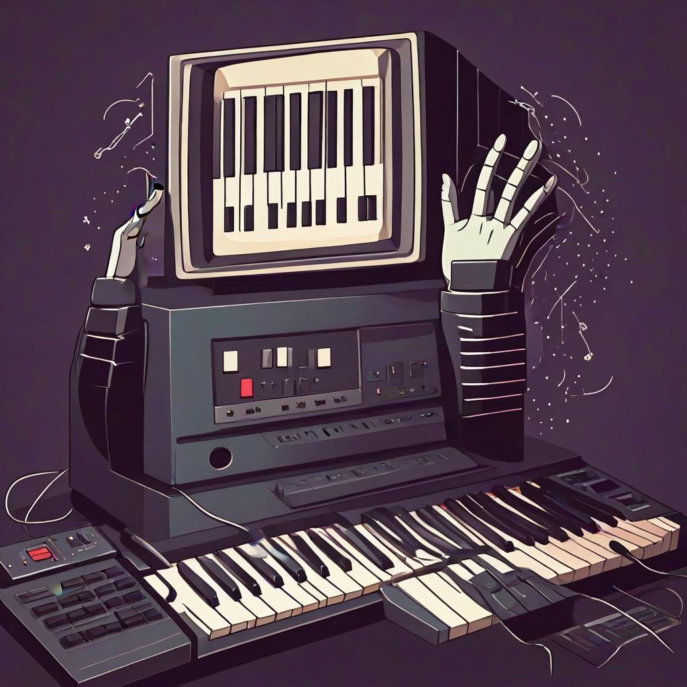

Savings in relearning
relearning
practice
scales
Tracking performance improvements over time in learning the maj6 dimished scale

retro 80s computer with cartoon hands playing a synthesizer. computer with hands playing piano. - dreamshaper
Yesterday I spent some time practicing the maj6 diminished scale across all keys. I also posted about practice ideas in relation to cognitive psychology phenomena.
For reference, I can play a C major scale in 7th chords in just under 3 seconds without any warm-up. I’ve had a couple days to put some practice into the C major 6th diminished scale, and I times myself at 12 seconds to play through the chords there.
I timed myself going through several keys for the first time, and B was the slowest at 104 seconds. Then, just for B maj 6 diminished, I did a focused spurt of practice for 10 minutes on that scale. This involved playing the scale ascending in chords over and over again, and not doing anything else. If I made a mistake I would correct it, and if I couldn’t correct it I would start again. I used a stopwatch on my phone for the timer, and pressed the lap button every time I finished the scale.
I was interested in measuring a learning curve to track my progress with this scale. The data looked like this:
The graph shows that I reduced my time to complete the scale by quite a bit in just 10 minutes of practice, from 104 seconds to 21 seconds.
That was yesterday.
Retention…Savings in re-learning?
My question this morning is how much did I retain? I haven’t practiced the B maj6 diminished scaled since yesterday. My plan is to go sit down and play it ascending for the next 10 minutes, record my playing times, and then come back here and graph it.
One possibility is that I’ll start off around 21 seconds where I left off, and then maybe get a faster. That would indicate I retained almost all of whatever I learned yesterday. Another possibility is that I start back at the beginning, perhaps having retained not very much at all. Still, if that happened, it’s possible that I would re-learn faster the second time through.
Let’s find out.
I just put in 10 minutes of repetitive practice, and here are the results.
What happened? I ended up at about 20 seconds per run at the end of yesterday (last red dot), and today I started way back at about 60 seconds per run. That might look like almost no retention of whatever I “learned” yesterday. Yes, my first data point today was almost twice as fast as the first one from yesterday, but that could be an outlier. I remember making loads of mistakes the first time yesterday and restarting the scale several times.
Although my starting points are similar, it appears there was a decent amount of savings in relearning. Savings in relearning is a concept from Hermann Ebbinghaus and his research on forgetting. Ebbinghaus spent time learning lists of random syllables until he could recite them, and then he waited different amounts of time before trying to recall them from memory. Not surprisingly, he forgot items over time. However, he would also relearn lists a second time, after the delay, and often found savings in his relearning attempt. Even though he had forgotten items from the list, when he tried to relearn the list, it took less time (than the initial learning attempt) before he could recite it perfectly again.
Something similar is going on here. One possibility is that I forgot everything I learned since yesterday, and that’s why I was back at the beginning. However, even though the data show I was basically back at the beginning, it seems my practice from yesterday helped me relearn faster than before. The green dots go down faster over practice attempts than the red dots. Yesterday I only got 15 scales completed in 10 minutes, but this time I got through 30 attempts. I also got my time down to 8 or 9 seconds by the end.
3rd attempt
For now I’m not being systematic about any of this. It’s been a few hours since my second attempt at practicing the B maj6 diminished scale. What would happen if tried again, instead of waiting for a longer delay?
So, I went and tried again for 10 minutes. Here’s the data:
Overall, the blue dors are pretty similar to the green dots from this morning. Even though I got down to about 8 seconds this morning, I didn’t start from there when I went back to practice. My first run on the third attempt was a big improvement in some sense, but the second run was way worse.
I’ll sit back an do a bit of introspective psychology along with some hand-wavy data description about what seems to be happening. For convenience, I’ll split this into three phases.
Phase 1. Puzzling it out. There is a lot action going on in the first 10 practice attempts. I start out really slow, and then make substantial speed gains across the first few attempts. Introspectively, this a very new scale to me. I can’t readily mentally visualize yet. By comparison say to a C major scale, the elements of which I can very easily bring to mind in terms of visual mental imagery or a mental sense of fingering chord shapes. Sitting here right now, I can think of a B maj6 chord now, but I’m drawing a blank when I think about the next chord. OK, it took at least 15 seconds to reconstruct the Dbdim7 chord in my mind. So, at this point in my B maj6 dim scale practice, when I go sit down to try playing it, I don’t have a great mental visualization of it, and I’m puzzling out each chord as I go through the scale.
If I zoom into the production of the scale it goes something like this. - OK, play the first chord…and, I’m practicing the B scale. - Look at B, but thumb on B (think that I should’ve practice B more as a kid). - I’m not slamming that B major triad…a little confused on whether to play E or Eb, or F or Gb. If things get really bad, then I can go back to first principles and work out the intervals in semitones, but I rarely need to do that for basic chords. However, this kind of mental puzzle talk is happening at the same time as important memories might come back. For example, I’m starting to get a nice mental image about the shape Bmaj6, with the B Eb Gb Ab. It’s a palpable kind of embodied knowledge or sense of the chord that is hard to describe, but has a lot to do with how my fingers and keyboard look and feel as they spread across and make contact with those notes. The B is the only white note, and the other three notes are pretty far away. I think the B-Gb perfect fifth might be physically the furthest on the piano. In any case, whatever this chord sense is, if I’m lucky enough for it to be “retrieved”, voila, I can use that memory and then play it (sidenote, this is basically the instance theory of automatization idea from an instrospective perspective). - Waiting for either the puzzling out process to find a solution, or for a memory of B maj6 to pop-up, is followed by playing the chord, ya I got it down. - At this point, I’m on the chord I was trying to play, and having trouble thinking up the next chord. - Another puzzling out process/waiting for a useful memory of the next chord ensues. Sometimes I just go for it and land the next chord not really knowing if it was going to work out. - I usually want to have some confidence that I will play the next chord correctly. So, I will sit on the current chord, stare at my fingers, and try to invoke the next chord. - Sometimes, I’m not particularly verbalizing or instructing myself about what the next chord is. Or, I’m changing the instruction. For example, if I’m on Bmaj6 and trying to play the next chord, I could be saying “play the next chord”, or “play the ii”, or “the next one is going to be the diminished chord, but what diminished chord is it?”, or “play the Db”, or “what is the Dbdim7”, and so on. Othertimes, there seems to be less inner voice, and more a sense of fingering patterns that need to change. - More recently, I’ve been trying to mentally visualize the next chord before I play it. Once I lock in the finger sense of what that chord will be, then I go to it. I find this usually helps with accuracy.
Taking all of this together I think provides some descriptive context to account for the lengthy inter-chord production times that appear in phase 1 (the first 10 practice attempts). I haven’t automatized these chords yet, and lot’s of different kinds of cognitive processing from active puzzling out a solution, to side conversations not super relevant to my current task, to losing track of what I’m doing, to finding that I do remember a chord— these activities all take some amount of time before the next chord is produced. And, those times can account for some of the time in-between each chord.
In my first few practice attempts, I find that some chords come back from memory, and others take some puzzling. And, that these can switch around sometimes, especially after going through the scale. There’s also room for a bunch of interference from other chord knowledge. For example, yesterday I did some focused practice on playing fully diminished 7th chords in every key. Now, this morning when I’m going through the Bmaj6 scale, even though I know that I should be alternating maj6 and dim7 chords across each note, sometimes I’ll be trying to play an Ebmaj6, but the Ebdim7 comes out. So, as I get into practicing the scale, achieving fluency also involves managing interference from other chords.
Phase 2. Almost getting it. I would say phase 2 is what is happening in between practice attempts 10 and 30. I’m hitting a floor here of about 10-12 seconds. This is not very fast or fluid, but I’m able to consistently play through the scale without making too many errors. Introspectively, there is still a lot of thinking going on before many chords. Sometimes I get a nice fast run of three or four chords in a row, other times I might completely fall apart on a chord and have a very long pause before being able to play it.
Phase 3. Whispers of fluency. In these very early practice attempts, by the time I get past 30 runs I’m starting to almost feel comfortable. I can begin to sense how the chords would be played in a fluent manner. If I go for it I can play it fast with lots of errors, but with the general feeling close to right.
Achieving actual fluency. As a piano player, I’m just going to keep practicing this scale, mix it up, and have fun with it. Fluency will come with practice, and I’m not going to sweat about it, or really care too much about optimizing the process.
As a cognitive psychologist, I am nevertheless wondering about various practice schedules or approaches that could influence getting an unfamiliar musical concept into series of fluent actions that I don’t have to think about. There are lots of manipulations that could be interesting to try.
One approach is for me to go all out and just practice ascending chords in the Bmaj6 scale, as I’ve been doing, but go all day long until I reach some kind of fluency criterion that’s good enough for now. If I could play that scale in 3 seconds I would be very happy with that level of fluency. Could I get to 3 seconds by focused repetitive practice, drilling that puppy until I get there or go to sleep trying, or before piano mush brain sets in? Maybe? If I did get to that criterion, what kind of retention would I have tomorrow?
It’s possible that large swathes of the above practice schedule would be practically useless. I could get tired and sloppy. Maybe I need to have a sleep and rely on the magic of memory consolidation. Or perhaps spread out the practice with lots of other intervening stuff.
In the first scenario I might actually get to a reasonable level of fluency in this scale sometime today. In the second scenario, it could take days or months depending on how many things I did in between.
I’m realizing I have a bunch more to write about this, but not in this post. I think it’s time for some cross-posting between my main research blog and this here music blog.